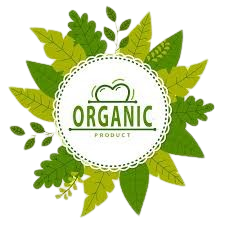
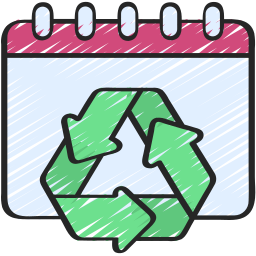
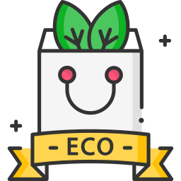
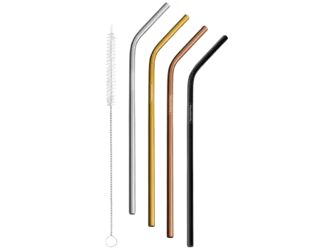
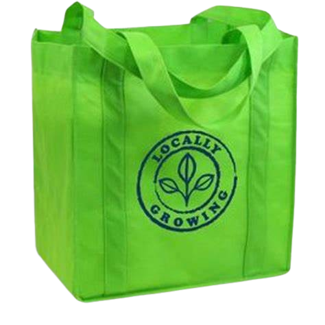
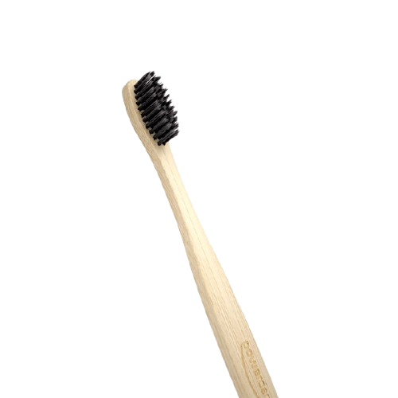
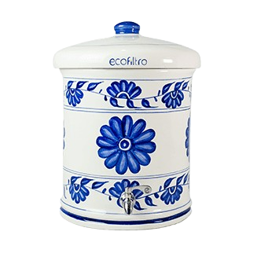
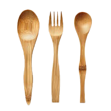
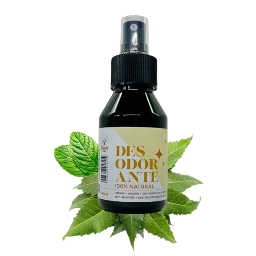

EcoProdutos
Lançamento da loja de ecoprodutos!
Bem-vindo à EcoProdutos, sua parceira na construção de um futuro mais sustentável! Fundada com o propósito de promover a consciência ambiental, nossa empresa oferece uma ampla gama de produtos e serviços que respeitam e protegem o meio ambiente.
Na EcoProdutos, acreditamos que pequenas ações podem fazer uma grande diferença. Por isso, trabalhamos incansavelmente para fornecer soluções ecológicas que atendam às suas necessidades, desde produtos de limpeza feitos com ingredientes naturais até consultorias especializadas em sustentabilidade.
Nosso compromisso vai além da simples venda de produtos; queremos inspirar uma mudança de comportamento em nossa comunidade. Com uma equipe dedicada e apaixonada, estamos prontos para guiá-lo em sua jornada rumo a um estilo de vida mais consciente e responsável.
Junte-se a nós na missão de cuidar do nosso planeta e descubra como a EcoProdutos pode transformar sua rotina em um exemplo de sustentabilidade!
Nossos Serviços
- Consultoria em Sustentabilidade
- Workshops de DIY Sustentável
- Serviço de Entrega Sustentável

- Programa de Reciclagem 
- Assinatura de Ecoprodutos 
Nossos Produtos
Canudo
EcoBag
Escova
EcoFiltro
Talher
Desodorante
O que dizem nossos clientes
João Lilou da Silva Alves
⭐⭐⭐⭐⭐
"Comprei canudos de inox na Ecoprodutos e estou muito satisfeito! A qualidade é excelente, eles são duráveis e fáceis de limpar. O atendimento foi rápido e atencioso, e a entrega chegou antes do prazo. Adoro saber que estou contribuindo para a redução do uso de plástico. Recomendo a todos que buscam uma opção sustentável!"
Sung Jin Woo
⭐⭐⭐⭐⭐
Muito bom esse site, nota 10. Eu sou Sung Jin Woo.
Recentemente comprei ecobags na Ecoprodutos e
estou
extremamente satisfeito! A qualidade das bolsas
é
excelente, feitas de material resistente e
durável.
Elas são perfeitas para as compras do dia a dia
e
ajudam a reduzir o uso de plástico, o que é um
grande diferencial. Além disso, a variedade de
estampas e cores é um bônus, tornando-as
estilosas.
O atendimento foi ótimo e a entrega rápida.
Recomendo a todos que buscam uma alternativa
sustentável!
Bora Bill lá ELE da Silva Fonseca
⭐⭐⭐⭐⭐
Os panos de cera que comprei são simplesmente
incríveis! Eles têm um design bonito e
funcional, e
o melhor de tudo é que são feitos com materiais
naturais. Usei para cobrir frutas, pães e até
mesmo
tigelas, e funcionaram perfeitamente. A
durabilidade
é impressionante; já lavei várias vezes e
continuam
como novos. Além disso, é ótimo saber que estou
fazendo minha parte para ajudar o meio ambiente.
O
processo de compra foi fácil e a entrega foi
rápida.
Super recomendo!
Amostradinho 28
⭐⭐⭐⭐⭐
Comprei a escova de dente de bambu da
Ecoprodutos e
estou muito satisfeita! O cabo é super
confortável
de segurar e as cerdas são macias,
proporcionando
uma limpeza eficaz sem agredir as gengivas.
Adoro
que é um produto biodegradável, ajudando a
reduzir o
uso de plásticos. Além disso, a escova não retém
odores ou sabores, o que é um grande
diferencial. O
envio foi rápido e a embalagem era reciclável.
Recomendo a todos que querem fazer uma escolha
mais
sustentável para a higiene bucal!
Últimas do blog
Nos dias de hoje, a sustentabilidade não é apenas uma tendência; é uma necessidade. Adotar um estilo de vida mais sustentável ajuda a preservar o meio ambiente e a garantir um futuro melhor para as próximas gerações. Aqui estão cinco dicas simples que você pode começar a implementar hoje mesmo!
1. Reduza o Uso de Plástico O plástico é um dos maiores vilões do meio ambiente. Comece substituindo produtos descartáveis por alternativas reutilizáveis. Use ecobags para suas compras, canudos de inox e talheres de bambu. Essas pequenas mudanças fazem uma grande diferença!
2. Opte por Produtos Naturais Escolha produtos de limpeza e higiene pessoal que sejam feitos com ingredientes naturais e embalagens recicláveis. Na EcoProdutos, oferecemos uma variedade de itens que são bons para você e para o planeta.
3. Compre Localmente Apoiar produtores locais não só ajuda a economia da sua região, mas também reduz a pegada de carbono associada ao transporte de produtos. Visite feiras e mercados locais sempre que possível!
Entre em contato
Se você tiver alguma dúvida, sugestão ou precisar de mais informações, não hesite em entrar em contato conosco! Estamos aqui para ajudar e adoraríamos ouvir sua opinião. Você pode nos enviar uma mensagem através do nosso formulário de contato ou pelas redes sociais. Sua participação é muito importante para nós!
Email: Ecoprodutos@produtos.com
Telefone: (61) 9 8327-9309